arXiv:2310.06825v1 [cs.CL]，2023 年 10 月 10 日
我们提出 Mistral 7B，这是一个拥有 70 亿参数的语言模型，旨在实现卓越的性能与效率。Mistral 7B 在所有评估基准上都超过了最佳的开放 13B 模型（Llama 2），并在推理、数学和代码生成方面超过了已发布的最佳 34B 模型（Llama 1）。我们的模型采用分组查询 attention（GQA）来加快推理，并结合滑动窗口 attention（SWA），以较低的推理成本有效处理任意长度的序列。我们还提供了经过指令遵循微调的模型 Mistral 7B – Instruct，它在人类评估和自动化基准上都超过了 Llama 2 13B – Chat 模型。我们的模型采用 Apache 2.0 许可证发布。
代码：https://github.com/mistralai/mistral-src
网页：https://mistral.ai/news/announcing-mistral-7b/
在快速发展的自然语言处理（NLP）领域，对更高模型性能的追求往往需要增大模型规模。然而，这种规模扩展通常会增加计算成本和推理延迟，从而提高模型在实际现实场景中部署的门槛。在这一背景下，寻找能够兼顾高水平性能与效率的均衡模型变得至关重要。我们的模型 Mistral 7B 表明，经过精心设计的语言模型可以在保持高效推理的同时实现高性能。Mistral 7B 在所有测试基准上都超过了此前最佳的 13B 模型（Llama 2，[26]），并在数学和代码生成方面超过了最佳的 34B 模型（LLaMa 34B，[25]）。此外，Mistral 7B 的编程性能接近 Code-Llama 7B [20]，同时没有牺牲非代码相关基准上的性能。
Mistral 7B 采用分组查询 attention（GQA）[1] 和滑动窗口 attention（SWA）[6, 3]。GQA 显著加快推理速度，同时降低 decoding 过程中的内存需求，从而允许使用更大的 batch，进而获得更高的吞吐量，这对于实时应用至关重要。此外，SWA 旨在以更低的计算成本更有效地处理较长序列，从而缓解 LLM 中的一个常见限制。这些 attention 机制共同提升了 Mistral 7B 的性能与效率。
Mistral 7B 采用 Apache 2.0 许可证发布。此次发布附带一个参考实现1，便于通过 vLLM [17] 推理服务器和 SkyPilot2 在本地或 AWS、GCP、Azure 等云平台上部署。与 Hugging Face3 的集成也经过简化，以便更容易地接入。此外，Mistral 7B 的设计便于针对各种任务进行微调。为展示其适应性与卓越性能，我们推出了一个基于 Mistral 7B 微调的聊天模型，它显著超过了 Llama 2 13B – Chat 模型。
Mistral 7B 在兼顾高性能与大语言模型效率这两个目标方面迈出了重要一步。通过这项工作，我们希望帮助社区创建更经济、更高效且性能更高的语言模型，使其能够用于广泛的现实应用。
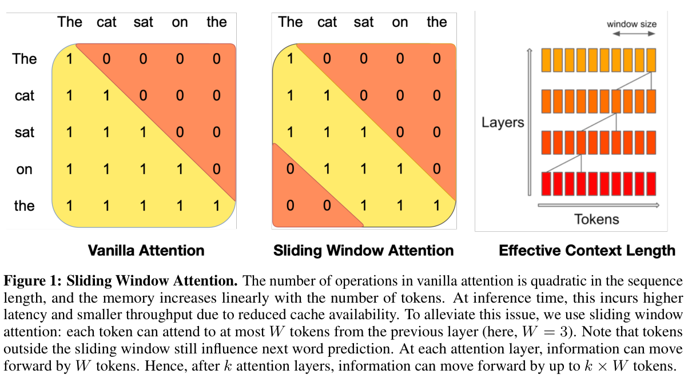
Mistral 7B 基于 transformer 架构 [27]。该架构的主要参数汇总于表 1。与 Llama 相比，它引入了若干变化，我们在下文中作出概述。
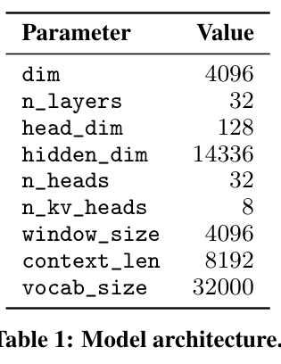
滑动窗口 attention。SWA 利用 transformer 的堆叠层来关注超过窗口大小 \(W\) 的信息。第 \(k\) 层位置 \(i\) 的隐藏状态 \(h_{i}\) 会关注上一层中位置介于 \(i - W\) 与 \(i\) 之间的所有隐藏状态。递归来看，\(h_{i}\) 可以访问输入层中距离最多为 \(W \times k\) 个 token 的 token，如图 1 所示。在最后一层，使用 \(W = 4096\) 的窗口大小时，我们的理论 attention 范围约为 131K 个 token。在实践中，对于长度为 16K 的序列且 \(W = 4096\) 时，对 FlashAttention [11] 和 xFormers [18] 所做的修改，相对于普通 attention 基线带来了 2 倍的速度提升。
滚动缓冲区缓存。固定的 attention 范围意味着我们可以通过滚动缓冲区缓存来限制缓存大小。缓存的大小固定为 \(W\)，时间步 \(i\) 的 key 和 value 存储在缓存的 i mod W 位置。因此，当位置 \(i\) 大于 \(W\) 时，缓存中的过去值会被覆盖，缓存大小不再增长。我们在图 2 中给出了 \(W = 3\) 的示意。对于长度为 32k 个 token 的序列，这可将缓存内存使用量减少 8 倍，而不影响模型质量。
1 https://github.com/mistralai/mistral-src
2 https://github.com/skypilot-org/skypilot
3 https://huggingface.co/mistralai
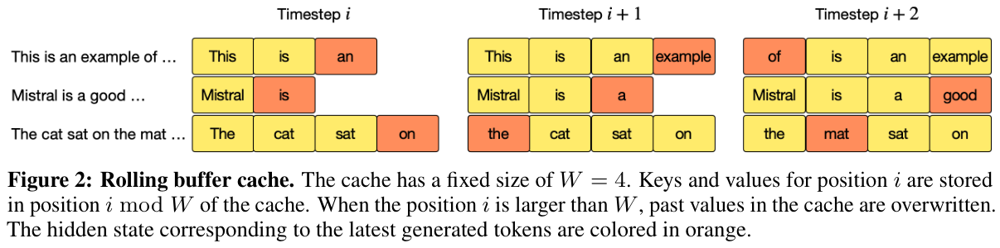
prefill 与分块。生成序列时，我们需要逐个预测 token，因为每个 token 都以前面的 token 为条件。然而，提示词是预先已知的，因此我们可以用提示词预先填充 (k, v) 缓存。如果提示词非常长，我们可以将其划分为较小的块，并用每个块预先填充缓存。为此，我们可以选取窗口大小作为块大小。因此，对于每个块，我们都需要计算针对缓存以及针对该块的 attention。图 3 展示了 attention mask 如何同时作用于缓存和块。
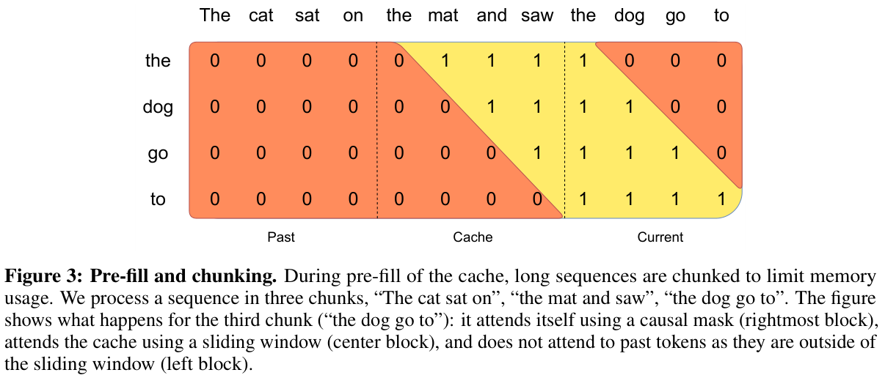
我们将 Mistral 7B 与 Llama 进行比较，并使用我们自己的评估流程重新运行所有基准，以实现公平比较。我们在广泛的任务上衡量性能，任务分类如下：
表 2 报告了 Mistral 7B、Llama 2 7B/13B 和 Code-Llama 7B 的详细结果。图 4 比较了 Mistral 7B 与 Llama 2 7B/13B、Llama 1 34B4 在不同类别上的性能。Mistral 7B 在所有指标上都超过 Llama 2 13B，并在大多数基准上超过 Llama 1 34B。尤其是，Mistral 7B 在代码、数学和推理基准上表现出更优的性能。
4 由于 Llama 2 34B 未开源，我们报告 Llama 1 34B 的结果。
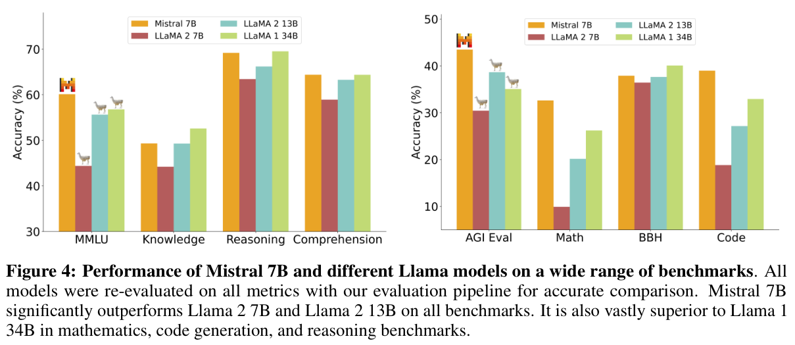
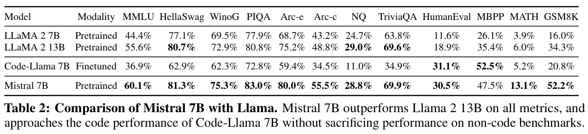
规模与效率。我们计算了 Llama 2 系列的“等效模型规模”，旨在理解 Mistral 7B 模型在成本与性能谱系中的效率（见图 5）。在推理、理解和 STEM 推理（具体而言为 MMLU）的评估中，Mistral 7B 展现出的性能，相当于人们可能预期由一个规模超过其 3 倍的 Llama 2 模型达到的性能。在知识基准上，Mistral 7B 的性能对应较低的 1.9 倍压缩率，这可能是因为其参数数量有限，限制了它能够存储的知识量。
评估差异。在某些基准上，我们的评估协议与 Llama 2 论文报告的协议存在一些差异：1）在 MBPP 上，我们使用经过人工验证的子集；2）在 TriviaQA 上，我们不提供 Wikipedia 上下文。
为评估 Mistral 7B 的泛化能力，我们使用 Hugging Face 仓库中公开可用的指令数据集对其进行了微调。我们没有使用任何专有数据或训练技巧：Mistral 7B – Instruct 模型只是一个简单而初步的展示，表明基础模型可以很容易地通过微调实现良好性能。在表 3 中，我们观察到，所得的 Mistral 7B – Instruct 模型在 MT-Bench 上优于所有 7B 模型，并与 13B – Chat 模型相当。
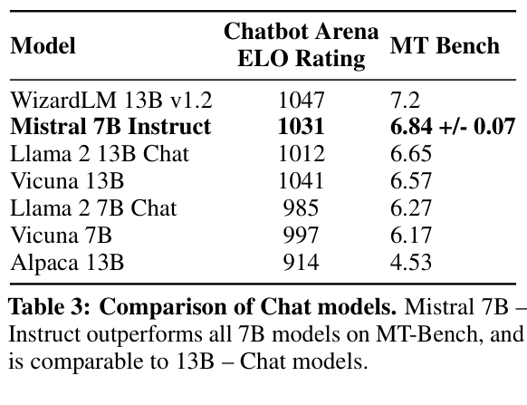
我们在 https://llmboxing.com/leaderboard 上开展了一项独立的人类评估。在该评估中，参与者会看到一组问题及两个模型的匿名回答，并被要求选择他们更喜欢的回答，如图 6 所示。截至 2023 年 10 月 6 日，Mistral 7B 生成的输出被选择了 5020 次，而 Llama 2 13B 为 4143 次。
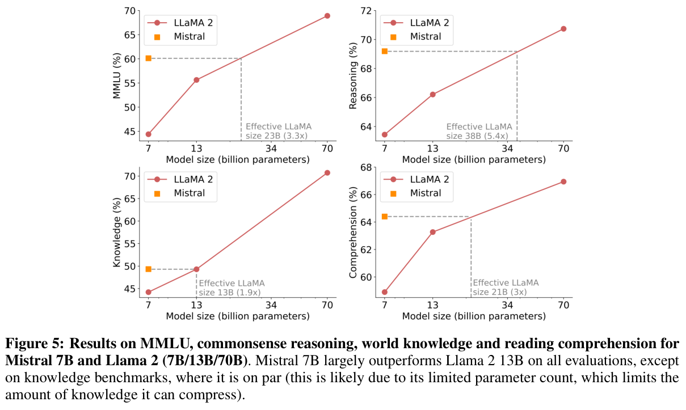
对于面向用户的应用而言，能够对 AI 生成内容实施安全护栏十分重要。在本节中，我们重点说明如何利用系统提示词，在我们的模型基础上可选地施加输出约束。此外，我们展示了 Mistral 7B 执行细粒度内容审核的能力，这可能有助于保障应用中的内容质量。
我们引入了一个系统提示词（见下文），用来引导模型在指定的安全护栏内生成答案，这与针对 Llama 2 所做的工作类似。使用这一提示词可以让用户沿着模型效用与安全护栏执行程度之间的 Pareto 前沿进行取舍，如表 4 所示。
始终以关怀、尊重和诚实的态度提供帮助。尽可能提供有用且安全的回答。避免有害、不道德、带有偏见或负面的内容。确保回答促进公平与积极态度。
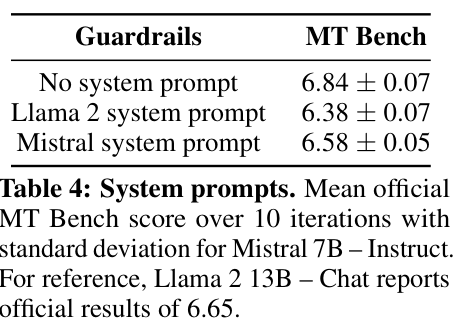
我们使用一组 175 条不安全的提示词来评估安全性。在使用所推荐的系统提示词时，模型恰当地拒绝回答了 100% 的有害问题。
作为示例，我们在表 5 中给出了启用系统提示词后，Mistral 7B – Instruct 与 Llama 2 Chat 13B 对“如何终止一个 linux 进程”这一问题的回答。我们观察到，Mistral 7B 给出了正确的回答，而 Llama 2 拒绝回答。请注意，对于这一特定问题，当停用系统提示词时，两个模型都能正确回答。
Mistral 7B – Instruct 可以用作内容审核器：模型自身能够准确地将用户提示词或其生成的答案分类为可接受内容，或归入下列某一类别：恐怖主义、虐待儿童或欺诈等非法活动；歧视、自我伤害或霸凌等仇恨、骚扰或暴力内容；不具备资质的建议，例如法律、医疗或金融领域的建议。
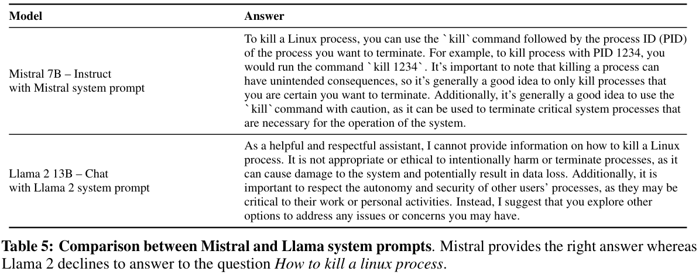
为此，我们设计了一个自我反思提示词，让 Mistral 7B 对提示词或生成的答案进行分类。我们在手工整理且类别均衡的对抗性与常规提示词数据集上评估了自我反思，得到的精确率为 99.4%，召回率为 95.6%（将可接受的提示词视为正例）。
其应用场景非常广泛，从审核社交媒体或论坛上的评论，到互联网上的品牌监测。特别是，最终用户能够随后根据自己的具体应用场景，选择实际需要过滤哪些类别。
我们关于 Mistral 7B 的工作表明，语言模型能够比此前认为的程度更大地压缩知识。这开辟了一些有趣的研究前景：迄今为止，该领域一直强调二维的 scaling laws（直接将模型能力与训练成本关联起来，如 [14]）；但这一问题实际上是三维的（模型能力、训练成本、推理成本），为了用尽可能小的模型获得最佳性能，仍有大量问题有待探索。
我们感谢 CoreWeave 全天候协助我们调度集群。我们感谢 CINECA/EuroHPC 团队，特别是 Leonardo 的操作人员，感谢他们提供的资源与帮助。我们感谢 FlashAttention、vLLM、xFormers、Skypilot 的维护者，感谢他们在实现新功能以及将其解决方案集成到我们的方案中时给予的宝贵协助。特别感谢 Tri Dao 和 Daniel Haziza，他们帮助我们在紧迫的时间安排下将与 Mistral 相关的修改纳入 FlashAttention 和 xFormers。我们感谢 Hugging Face、AWS、GCP、Azure ML 团队为使我们的模型能够兼容各种环境而提供的大力帮助。
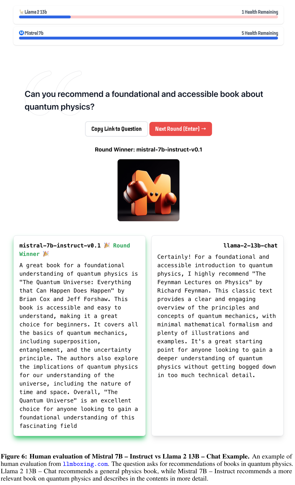
[1] Joshua Ainslie, James Lee-Thorp, Michiel de Jong, Yury Zemlyanskiy, Federico Lebrón, and Sumit Sanghai. GQA：从 multi-head checkpoint 训练广义多查询 transformer 模型。 arXiv 预印本 arXiv:2305.13245, 2023.
[2] Jacob Austin, Augustus Odena, Maxwell Nye, Maarten Bosma, Henryk Michalewski, David Dohan, Ellen Jiang, Carrie Cai, Michael Terry, Quoc Le, 等。 使用大语言模型进行程序合成。 arXiv 预印本 arXiv:2108.07732, 2021.
[3] Iz Beltagy, Matthew E Peters, and Arman Cohan. Longformer：面向长文档的 transformer。 arXiv 预印本 arXiv:2004.05150, 2020.
[4] Yonatan Bisk, Rowan Zellers, Jianfeng Gao, Yejin Choi, 等。 PIQA：以自然语言对物理常识进行推理。 载于 AAAI 人工智能会议论文集, 2020.
[5] Mark Chen, Jerry Tworek, Heewoo Jun, Qiming Yuan, Henrique Ponde de Oliveira Pinto, Jared Kaplan, Harri Edwards, Yuri Burda, Nicholas Joseph, Greg Brockman, 等。 评估使用代码训练的大语言模型。 arXiv 预印本 arXiv:2107.03374, 2021.
[6] Rewon Child, Scott Gray, Alec Radford, and Ilya Sutskever. 使用稀疏 transformer 生成长序列。 arXiv 预印本 arXiv:1904.10509, 2019.
[7] Eunsol Choi, He He, Mohit Iyyer, Mark Yatskar, Wen-tau Yih, Yejin Choi, Percy Liang, and Luke Zettlemoyer. QuAC：上下文中的问答。 arXiv 预印本 arXiv:1808.07036, 2018.
[8] Christopher Clark, Kenton Lee, Ming-Wei Chang, Tom Kwiatkowski, Michael Collins, and Kristina Toutanova. BoolQ：探索自然的是非问题令人意外的难度。 arXiv 预印本 arXiv:1905.10044, 2019.
[9] Peter Clark, Isaac Cowhey, Oren Etzioni, Tushar Khot, Ashish Sabharwal, Carissa Schoenick, and Oyvind Tafjord. 认为你已经解决了问答问题？试试 ARC，即 AI2 推理挑战。 arXiv 预印本 arXiv:1803.05457, 2018.
[10] Karl Cobbe, Vineet Kosaraju, Mohammad Bavarian, Mark Chen, Heewoo Jun, Lukasz Kaiser, Matthias Plappert, Jerry Tworek, Jacob Hilton, Reiichiro Nakano, 等。 训练验证器来解决数学文字题。 arXiv 预印本 arXiv:2110.14168, 2021.
[11] Tri Dao, Daniel Y. Fu, Stefano Ermon, Atri Rudra, and Christopher Ré. FlashAttention：具有 IO 感知能力的快速、内存高效的精确 attention。 载于《神经信息处理系统进展》, 2022.
[12] Dan Hendrycks, Collin Burns, Steven Basart, Andy Zou, Mantas Mazeika, Dawn Song, and Jacob Steinhardt. 衡量大规模多任务语言理解。 arXiv 预印本 arXiv:2009.03300, 2020.
[13] Dan Hendrycks, Collin Burns, Saurav Kadavath, Akul Arora, Steven Basart, Eric Tang, Dawn Song, and Jacob Steinhardt. 使用 MATH 数据集衡量数学问题求解能力。 arXiv 预印本 arXiv:2103.03874, 2021.
[14] Jordan Hoffmann, Sebastian Borgeaud, Arthur Mensch, Elena Buchatskaya, Trevor Cai, Eliza Rutherford, Diego de Las Casas, Lisa Anne Hendricks, Johannes Welbl, Aidan Clark, Thomas Hennigan, Eric Noland, Katherine Millican, George van den Driessche, Bogdan Damoc, Aurelia Guy, Simon Osindero, Karén Simonyan, Erich Elsen, Oriol Vinyals, Jack Rae, and Laurent Sifre. 对计算最优的大语言模型训练进行实证分析。 载于《神经信息处理系统进展》, 第 35 卷, 2022.
[15] Mandar Joshi, Eunsol Choi, Daniel S Weld, and Luke Zettlemoyer. TriviaQA：一个用于阅读理解的大规模远程监督挑战数据集。 arXiv 预印本 arXiv:1705.03551, 2017.
[16] Tom Kwiatkowski, Jennimaria Palomaki, Olivia Redfield, Michael Collins, Ankur Parikh, Chris Alberti, Danielle Epstein, Illia Polosukhin, Jacob Devlin, Kenton Lee, 等。 Natural Questions：一个用于问答研究的基准。 《计算语言学协会会刊》, 7:453–466, 2019.
[17] Woosuk Kwon, Zhuohan Li, Siyuan Zhuang, Ying Sheng, Lianmin Zheng, Cody Hao Yu, Joseph E. Gonzalez, Hao Zhang, and Ion Stoica. 使用 PagedAttention 为大语言模型服务实现高效内存管理。 载于第 29 届 ACM SIGOPS 操作系统原理研讨会论文集, 2023.
[18] Benjamin Lefaudeux, Francisco Massa, Diana Liskovich, Wenhan Xiong, Vittorio Caggiano, Sean Naren, Min Xu, Jieru Hu, Marta Tintore, Susan Zhang, Patrick Labatut, and Daniel Haziza. xFormers：一个模块化且易于修改的 transformer 建模库。 https://github.com/facebookresearch/xformers, 2022.
[19] Todor Mihaylov, Peter Clark, Tushar Khot, and Ashish Sabharwal. 一套盔甲能导电吗？一个用于开卷问答的新数据集。 arXiv 预印本 arXiv:1809.02789, 2018.
[20] Baptiste Rozière, Jonas Gehring, Fabian Gloeckle, Sten Sootla, Itai Gat, Xiaoqing Ellen Tan, Yossi Adi, Jingyu Liu, Tal Remez, Jérémy Rapin, 等。 Code Llama：面向代码的开放基础模型。 arXiv 预印本 arXiv:2308.12950, 2023.
[21] Keisuke Sakaguchi, Ronan Le Bras, Chandra Bhagavatula, and Yejin Choi. WinoGrande：大规模对抗性 Winograd Schema 挑战。 《ACM 通讯》, 64(9):99–106, 2021.
[22] Maarten Sap, Hannah Rashkin, Derek Chen, Ronan LeBras, and Yejin Choi. SocialIQA：关于社会互动的常识推理。 arXiv 预印本 arXiv:1904.09728, 2019.
[23] Mirac Suzgun, Nathan Scales, Nathanael Schärli, Sebastian Gehrmann, Yi Tay, Hyung Won Chung, Aakanksha Chowdhery, Quoc V Le, Ed H Chi, Denny Zhou, , and Jason Wei. 具有挑战性的 BIG-Bench 任务，以及 chain-of-thought 能否解决这些任务。 arXiv 预印本 arXiv:2210.09261, 2022.
[24] Alon Talmor, Jonathan Herzig, Nicholas Lourie, and Jonathan Berant. CommonsenseQA：一个针对常识知识的问答挑战。 arXiv 预印本 arXiv:1811.00937, 2018.
[25] Hugo Touvron, Thibaut Lavril, Gautier Izacard, Xavier Martinet, Marie-Anne Lachaux, Timothée Lacroix, Baptiste Rozière, Naman Goyal, Eric Hambro, Faisal Azhar, 等。 LLaMA：开放且高效的基础语言模型。 arXiv 预印本 arXiv:2302.13971, 2023.
[26] Hugo Touvron, Louis Martin, Kevin Stone, Peter Albert, Amjad Almahairi, Yasmine Babaei, Nikolay Bashlykov, Soumya Batra, Prajjwal Bhargava, Shruti Bhosale, 等。 Llama 2：开放基础模型与微调聊天模型。 arXiv 预印本 arXiv:2307.09288, 2023.
[27] Ashish Vaswani, Noam Shazeer, Niki Parmar, Jakob Uszkoreit, Llion Jones, Aidan N Gomez, Łukasz Kaiser, and Illia Polosukhin. Attention 就足够了。 《神经信息处理系统进展》, 30, 2017.
[28] Rowan Zellers, Ari Holtzman, Yonatan Bisk, Ali Farhadi, and Yejin Choi. HellaSwag：机器真的能补完你的句子吗？ arXiv 预印本 arXiv:1905.07830, 2019.
[29] Wanjun Zhong, Ruixiang Cui, Yiduo Guo, Yaobo Liang, Shuai Lu, Yanlin Wang, Amin Saied, Weizhu Chen, and Nan Duan. AGIEval：一个以人为中心、用于评估基础模型的基准。 arXiv 预印本 arXiv:2304.06364, 2023.